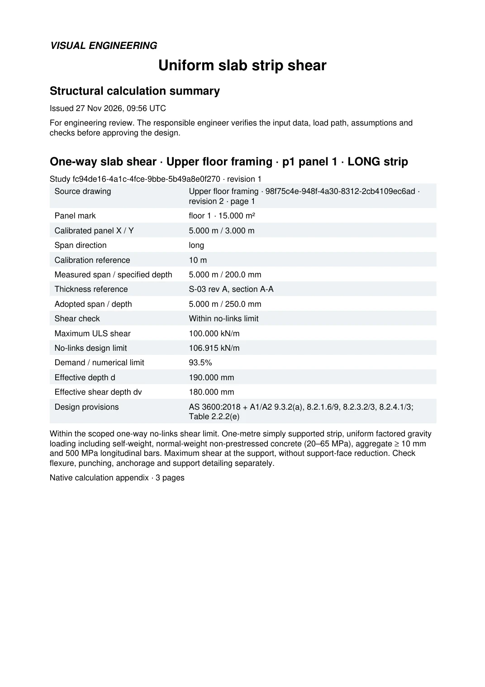

One-way slab shear
Trace a 5 × 3 m slab panel and check a one-metre strip along the 5 m span. At 200 mm thickness, the 30 kPa uniform factored load gives 75 kN/m. Raising the load to 40 kPa exceeds the 85.532 kN/m no-links limit.
The issued calculation compares a 250 mm trial section at the same total factored load. Demand is 100 kN/m and the no-links limit is 106.915 kN/m. Verify the loading and revised self-weight, support conditions and reinforcement for a project.
Loading the report…
